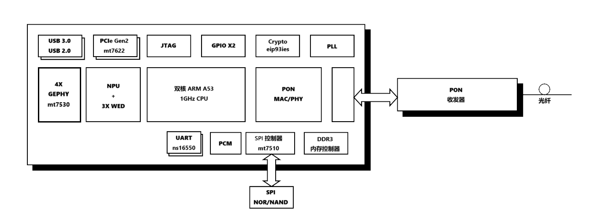

达发 airoha en7562ct SoC 构成分析以及 OpenWrt 支持研究（下）
接上文 SDG320 en7562ct ax3000 研究（上）
SoC 构成研究
提出出来的 dts 是 en7523 的，有点意思，看起来这颗 SoC 不简单，应该是胶水封装的。
从原厂的编译信息分析
/userfs/profile.cfg 有着一些编译信息。
1 | "512k[bootloader],12m[rescue],1280k[reservearea],256k[romfile],5m[kernela],33m[rootfsa],5m[kernelb],33m[rootfsb],6m[data],50m[java],78m[osgi]" |
这个分区信息是移动版本的，其他版本的是下面这样的
1 | "512k[bootloader],12m[rescue],1280k[reservearea],256k[romfile],5m[kernela],33m[rootfsa],5m[kernelb],33m[rootfsb],6m[data],16m[plugin1],16m[plugin2],96m[plugin3]" |
UBOOT 2014 版本 ATF2_1
1 | TCSUPPORT_ARM_SECURE_BOOT=y |
这两个 SECURE_BOOT 有什么区别吗？应该上面这个是 ATF 的。
如果有高手，可以结合开源的 ATF 代码，尝试制作一个多功能 UBOOT，就像 uboot-mt798x 一样
1 | TCSUPPORT_ETHPHY=5R_DIS |
这里只选取了最重要的差别，其他系统定义上的差别、驱动特性的差别没有给出。
因为没有注释，只能推测
第一行 TCSUPPORT_ETHPHY=5R_DIS 可能是指禁用了 5 个以太网物理接口（可能是为启用 en8850 交换机做准备），也可能是其他含义。
第二行 TCSUPPORT_7562_CD=y 可能是指启用了 en7562ct 的特性，或者单纯是一个标志位，代表该芯片来自 7562 家族。
第三行 TCSUPPORT_GCC10_3_0_GLIBC2_32_KERNEL5_4=y 指定了编译环境，使用 GCC 10.3.0、glibc 2.32 和 Linux 内核 5.4，符合来自下面提到的编译信息。
第四行 TCSUPPORT_SWITCH_8850=y 指定了使用 8850 交换机芯片。这个 8850 应该不是至 rtl8850，而是达发/MTK的 8850 交换机芯片，因为 rtl8850 是一个Wifi+蓝牙芯片，所以这个 8850 应该是达发的 8850 交换机芯片。
第五行 TCSUPPORT_BUSYBOXCONFIG_TC3262=y 指定了使用了 TC3262 的 BusyBox 配置。TC3262 是达发的一个 SoC 系列，可能是为了兼容性或特定功能。
TcBoot 是从 TrendChip 的 TC3262 衍生而来的极简引导加载程序。可能是为了支持 A/B 分区的相关特性，或是 NAND BBT/BMT 相关功能。
某些编译信息，来自固件里打包的某些文件，这应该是编译 Airoha SDK 的工具链。
1 | root@Ubuntu:tmp# /home/sdks/OEM/airoha_en75xx-evb2023/bin/arm-linux-gcc -v |
没有源码，看个乐呵。
设备树构建猜想
以下是进行推测的过程，可以直接跳到末尾最新的部分。
当然，这些都是推测，不保准准确，没有看到 dieshot 时，谁也不能确定。
airoha: add support for Gemtek W1700K
这个提交展示了如何在带有 Secure Boot 的达发设备上引导系统。W1700K 是一个基于 an7581 的设备，使用了 Secure Boot 机制。
我感觉有戏，感觉可以为该设备提供 OpenWrt 支持。但是主线上的 an7523 只有验证样品的 DTS 文件，没有模板。
不过话又说会来了，这个 dts 貌似不太完整，比如 keys、led 的 GPIO 都没有，而且也没有分区信息，应该是藏在内核脚本里了，还是要ttl看启动信息。
见参考资料 [1]。
gdma 应该是一个 dma 设备，而 gdm 是一个以太网 mac 设备，frame_engine 集成了以太网相关的部分。
在 [2] 中提到：
R5408M 的四个 2.5G 口是直通 CPU 的，…CPU EN7562C 里面集成有一个千兆交换机，5-8 号千兆口就是走这个交换芯片。…
参考[3]:
…CPU型号是EN7652CT，双核A53架构，频率1GHz，集成4个千兆PHY。…
以及原厂编译配置文件中的
1 | TCSUPPORT_HSGMII_LAN=y |
结合 [4] 、[5] 的信息以及使用 ifconfig/iwconfig 命令查看到的网口信息
1 | eth0 |
可以确定，这确实是有一个千兆交换机内置在 en7562ct SoC 之中。GMAC1 扩展支持 SGMII 和 HSGMII
估计应该和 EN8850DRE 差不多
而设备树中包含了 wdma 和 wed，设备树中使用 en751221 作为兼容硬件，可能同样兼容 EN7526。
Pcie 方面，en7562ct 使用了兼容 mt7520 的 pcie 通道
而 hsgmii 是提供 2.5Gbps 内部接口(Interface)，或为 pon/xpon 提供支持。
参考[3:1]:
…T和U的差别，从价格和扩展性来看，就差在3个HSGMII接口上。…
千兆网口(PHY)来自内部的以太网交换机芯片。
额外发现，airoha 的交换机芯片，后缀不一样，它们的结构可能也不相同，故此驱动可能也并不通用，特定型号只能期待 MTK/AIROHA 开源了。
以及可以发现，小米 BE5000，使用了 en7563PT 处理器，推测该芯片应该是 en7562 的更新换代。以及还有一款 极客AP 也使用了 en7563pt 方案。
解包小米固件后，发现该 dts 与 an7562 的内核提取 dts 非常相似，也是基于 an7523 的设备树，但是多了 an7581 的 oop-table 频率表，GPIO、分区表、thermal-zones等。
另外，我们也可以查看另一个不同架构 SoC en751221 的相关资料，已经有人发表相关的文章。具体见参考资料 [1:1]。也已经有人为其适配 Linux/OpenWrt。
en7561 一般搭配 MT7905DEN+MT7975DN 配置成 ax1800
en7562 一般搭配 MT7976DN+MT7916AN 配置成 ax3000
an7963 一般搭配 MT7976CN+MT7991AV/BV 配置成 be3600/be5000
另外，airoha 的命名很混乱，en7561 是 mips 架构的，en7562/7563 是 arm 架构的，据说 en7561 是 mt7621 的改版，如果要尝试为 en7561 提供 OpenWrt 支持，可以参考 mt7621 的相关代码。
6月16日更新
这 econet 到底是 MTK 的子公司，其芯片（en7562）构成充满了 MTK 技术的影子；SoC 与 mt7622 相似、DMA 可能来自 RaLink、MT7622 的 PCIe、mt7621 的 i2c、mt7530 类似的交换机、mt7510 改进而来的 spi 控制器，结合了 MTK ATF 与 tc3262 的 U-Boot。。。
7月10日更新
通过观察市场上的产品，我们可以确定，econet en7523 系列的 SoC 是层层改进的结果。
并且它们有一个特点，en752x 基本都在国外市场上销售，而 en756x 系列则主要在国内市场上销售。
结论
7月9日更新
概述：
EN7562CT 是用于 xPON 应用的高度集成的单芯片解决方案。
它集成了四个以太网 GPHY、一个 DDR3 控制器、一个 USB3.0 Host、一个 USB2.0 Host、两个 PCIe Gen2 端口，以及用于 VoIP 应用的具有 ISI/ZSI 兼容接口的 PCM 控制器，从而完全满足未来智能家居网关的要求。
EN7562CT 采用 1.0GHz ARM CA53 双核 CPU 和强大的 Xmart PacketAccelerator（XPA），它可以支持无与伦比的网络功能，具有极高的数据包处理能力。
通过 XPA，EN7562CT 执行高级 QoS、安全性和灵活的协议管理。
EN7562CT 还集成了三个专有的 RISC-V 内核，以加速 WiFi 和安全应用程序。
EN7562CT 采用领先的节能技术制造系统板设计简单易行，提供系统成本低、超低能耗的独特消费者解决方案
特性：
高度集成的广域网接口
符合 ITU-T G.984/G.988和IEEE802.3ah 标准
支持主动以太网
提供 MIB 计数器和嗅探器功能，用于快速现场调试非匹配和 Xmart 数据包处理引擎
Xmart packet 加速器可以支持线速数据包处理和转发无需 CPU 参与的能力
支持高达 32K 的流量，包括 L2 网桥、IPv4 NAT/路由、IPv4 NAPT、IPv6
3/5 元组路由、6RD 和 DS-LITE、NPTv6、VxLAN、NVGRE强大的流量分类引擎解析 L2 到 L4 头信息
TR-156 和 CTC Spec 中定义的灵活 VLAN 转换功能。
支持 L2 和 L3 组播流和组播 VLAN 转换
可配置的数据包缓冲区位置，具有高效的基于页面的链表缓冲区管理
有效的 QoS 方案，包括按流 TrTCM 流量整形、SP/WRR/SP+WRR
用于交通调度，尾部下降和红色用于拥堵处理支持高达 16K 的 jumboframe
高度集成的局域网接口x4 GEPHY
x3 HSGMII 与 PCIE/USB SerDes 的组合。强大的 SoC 平台
1.0GHz ARM CA53 双核 CPU，256K L2 缓存
集成三个专有的 RISC-V 内核，用于 WiFi 和安全加速
支持高达 1GB DDR3-1866 SDRAM
支持 SPI NOR/NAND 闪存
两个用于双频 WiFi 应用的 PCIe Gen2 接口
一个 USB3.0 接口和一个 USB2.0 接口
提供一个 PCM 或两个 ZSI/ISI 接口
用于安全应用的内置加密引擎
两个 UART
一个 I2C 主机和一个 I2C slave
方框图：

注意：图中相关组件标注的型号只是代表该组件的功能相近，并不带不一定是该型号的组件或兼容组件。
SerDes配置：
| SerDes 名称 | 模式 |
|---|---|
| PONSerDes | PON/HSGMII/5GBASE-R |
| PCIe Gen2 SerDes | PCIe Gen2/HSGMII |
| USB3 SerDes | USB3/HSGMII |
封装工艺:
LFBGA-361
OpenWrt 支持的可能性
6月13日记录
今天有一个新的发现：airoha_ml
随后，我又从这些文件中发现了一个名为 IOWRT Airoha integration，目的是移植 Airoha SDK 到 IOWrt(Based On Openwrt)。
6月15日记录
今天我又发现了一款使用 en7562ct 的设备（不过无线使用 7915）的 make config 文件，发现这是使用21年11月的编译配置，此时它直接使用了 en7523 相关配置，全然没有使用 8850 交换机选项和其他有区别于 en7523 的配置。
而这些变化发生于 22 年某个时间，发生这些变化的 SDK 来自 23 年，所以我更能确定了，早期的 en7562 设备直接使用 en7523 的设备树进行编译。
关于交换机，在设备树中的 Frame_Engine 设备中，就有一个交换机的节点。起初查看 /proc/device-tree/ 目录下的设备树文件时，没有发现交换机设备/以太网设备，我还以为是 airoha SDK 的原因，认为实际存在但没在设备树中显示，因为这些设备树的命名难以猜测，以及该设备运行的系统与寻常 linux 不同，似乎叫 tclinux。
即便不启用属于 en7562 家族的特性，它照样能够运行。
是否好奇没有分区表要怎么启动？我也很好奇，然后查阅了文档，像一些 gpio，分区表，都可以写在 uboot 的环境变量/启动命令中。所以不必纠结分区表了和设备树了。这倒是提醒我备份 u-boot 环境变量十分重要。
此外，我发现，userfs/ 目录下，存在：7523duled.conf、7523guled.conf、7529_62led.conf、7529_cd.conf、led.conf、led_fpga.conf 等文件，这些文件可能是用于配置 LED 灯的。所以，达发的 led gpio 可能是通用的，但也可能是厂商内部定义的。
通过查看 IOWrt Airoha integration 的代码，发现他们的也使用类似 airoha 的 led 配置方式。同样存在于 userfs/led.conf 文件中。
通过比较，可以确定 led.conf 并非是通用的，而是特定于某个设备的配置文件。适配系统时，需要通过 patch 的方式来修改该文件。
6月16日更新
看来为路由器制作系统的想法还是有一些问题，当我下克隆源码后，阅读 README.md 文件时，发现了一段隐藏的文本，我已将其翻译为中文：
1 | 这个机器可以作为路由器，只要有一个带有正确驱动程序的 USB 加密狗（目前，内核配置为使用 RTL8169 驱动程序来支持使用此芯片组的 USB-Ethernet 加密狗）。 |
这段文本认为只有 USB 以太网加密狗才能作为路由器使用，这让我感到困惑。
但也可能是因为它的固件有问题，该设备系统 SDK 版本中使用其他方法实现拨号或是存在 BUG。
6月29日更新
今天抽空连接了 TTL，看了一下 uboot 和 启动 log，看到了一下内容
1 | (1) insmod mdio_arht.ko |
这三个模块都是不存在的，但是系统想要加载它们。en8811h 是一个以太网 PHY 驱动，8811_bbu_api 是一个 BBU 驱动，mdio_arht 是一个 MDIO 驱动。
竟然不是 en8850，而是 8811h，也证实了不需要 en8850 的驱动。直接使用 en7523 的设备树就可以了。
然后就是，它真的有 efuse。
还有一个就是 led 相关的了
1 | tcledctrl version: tcledctrl V1.1.0.0 (Nov 10 2023-16:08:25). |
以及相关的分区表和 gpio 确实存储在 uboot-env 中。
1 | bootdelay=3 |
OpenWrt 实战研究
7月3日更新
近几日尝试编译了基于 Linux 6.6 的固件，以及解决相关驱动问题。
结果是可以启动，但是以太网部分瘫痪，eth、switch、wlan 都无法正常工作。
另外编译过程中 airoha_eth.c 存在问题，使用 patch 解决了（编译报错，但是无法判断该驱动是否正确），不知道是否是因为这个问题导致以太网无法工作。还有 Airoha spi 驱动的问题需要解决。
IOWrt Airoha integration 项目可以当作参考，虽然他们开源了一部分代码，但是仍然有很多门槛，无法一步到位直接使用。
7月5日更新
en7562-24.10
目前系统能正常启动，但以太网部分仍然无法工作，具体的表现是 system-control/clock-control 无法正常工作，导致相关设备无法正常 resets，尝试使用 an7581 的 scu/syscon/clk 或是 ti 的 gsw resets 驱动，但是没有成功。
只能等待 airoha/mediatek 开源相关驱动，或是有大佬能提供相关文档/资源。
你可以尝试该 initramfs 镜像，理论 en7562/en7563 的设备都可以使用
Build for Airoha en7562ct
使用方法详见该分支的 README。
7月6日更新
这个 SoC 网络部分的驱动或许可以结合 en7521 和 an7581 的驱动代码，en7562 很明显是迭代过程的产品，en7521 有泄露的驱动代码，an7581 的驱动代码是官方开源的，但是这种没有 datasheet 的产品，寄存器地址、寄存器位的含义都不清楚，无法进行驱动开发。
还有我尝试在编译了 arm64 的内核，因为某些驱动原生是 arm64 开发的，不清楚是否兼容 v7l 内核，但是编译出来的内核无法正常开机，启动内核后直接 reset cpu。
捋一捋，可以发现：
frame_engine 基于 en7521 的 frame_engine 并加上了一些 PPE/NPU 还有一些 ONU 相关的特性
wed/wdma 兼容 en751221
npu 可能是 an7581 npu 的前身
watchdog 兼容 en7521 的 watchdog
关键的 system-control 部分，我不太清楚，因为 reset-controller/clock-controller 令人折磨，不清楚这个 SoC 是如何工作的。
但是 an7581 的以太网已经是 eth + switch 的形式了，而加速器部分貌似只使用了 npu，wed、wdma 没有看见相关定义
wed 见于 mt7622，而 mt7622 上有 wed0、wed1，而该 SoC 上是 wed0、wed2、wed_test，暂时不知道他们的关系。wdma 见于 mt7623。
然后就是在 an7581 上，npu 用于加速 eth，那么在该 SoC 上，已经存在 npu 了，那么 wed 的作用是什么？
小道消息：TW 某 M 开头芯片大厂据说由于降本增效裁员裁到大动脉，现在 mtwifi 部门与 mt76 部门合并，现在开发驱动的是大学生与阿三，npu 难产，开发3年没有结果，未来将回归 wed + ppe 路线。
总结
目前的结论是：
目前主线 Linux/OpenWrt 可以直接启动所有 airoha mips/arm 的设备。
但是其他部分，比如 pcie/usb/eth/switch/gpio/watchdog/pinctrl/pwm/wed/npu/etc. 都需要特定的驱动支持。
可以找到的驱动有：
pcie: airoha,en7523/airoha,en7581
frame_engine: ecnt,en7512-eth/airoha,en7581-eth
swith: airoha,mt7530
npu: airoha,en7581
wed: airoha,en7581
watchdog: ecnt,en7512/airoha,en7581
gpio: airoha,en7523/airoha,en7581
pinctrl: airoha,en7523/airoha,en7581
spi 部分，貌似有 snfi 驱动，或是 mt7510，还有兼容 en7523 的三种，但是我试过了，无论哪个都无法正常工作。都无法读到分区表，无法访问 mtd 设备。
即使目前有兼容 en7523 的某些驱动，但是用在 en7562 仍然有问题，比如 pcie 无法正确取得资源，eth、switch 的 reset 问题，gpio 相关的 pin-ctrl 问题等等。
另外，不要试图使用 mt7530 的驱动去驱动交换机，这是一个错误的思路。当然，也可能是由于该 SoC 的交换机驱动还没有完成。
告一段落
驱动问题我实在无法解决，尝试使用多种解决方法，但是没有成功。
有关该设备的 OpenWrt 支持相关研究到此为止，直到上游有相关进展。
参考资料
TrendChip
EcoNet
MediaTek/SoC
Quantum Fiber W1700k support - For Developers - OpenWrt Forum
test_devkit_en7521_20161129.tgz
cjdelisle’s openwrt
Support for Zyxel - PX3321-T1
Zyxel PMG5617GA router OEM GPL source code a.k.a. OPAL based on OpenWRT 14.07
OpenWrt support for Zyxel PMG5617GA and Econet SoCs, first GPON support !?